"A content evening."
Project 1: Storybook
Process Document
by Ecem Ozturk
Interactive Media:Web 501
OCAD Winter 2024
Part 1: Ideation
From the moment I experienced Good Morning Empire by Aidan Quinlan, I have been wanting to do a project with a muted and calm aesthatic. I wanted to stir away from a purely 2D coloring book look, and exercise a deeper meaning behind working with shapes. That was why I was impressed with Good Morning Empire, the use of interaction and an effort towards working with the limitation of using only shapes and linework.
My next Eureka! moment was when I decided that I wanted to experiment with creating a 3D environment. Using only shapes, meant I had to first come up with a compelling concept, to be able to create a succesful design work. Because limitations like this means content of your work also becomes equally important as the medium/ mode/ style/ execution of it.
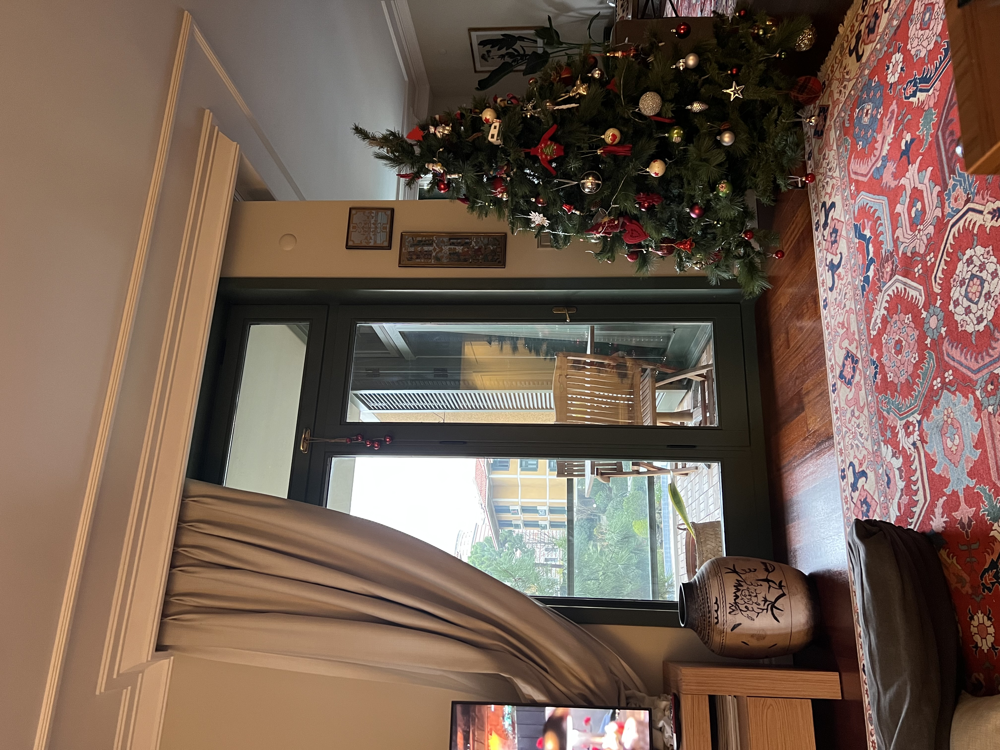Inspired by the project description, I started thinking about my home back in Istanbul and how I spent the holiday there. I truly felt content with myself, in my habitat. Everything so familiar and sincere, I felt warm and relaxed.
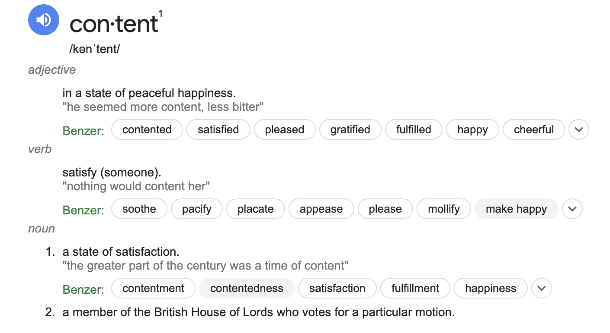Chasing a story filled with action phrases and an end goal would take out my initial intention of encapsulating the calmness of this experience. So, I decided to craft the storyline in a non-linear way. I focused on the environments and interactions. When looked as a whole, this is the story of how I felt content in my home.
Part 2: Execution
I decided to design the living room as the welcome page and make other activities come back to this area. I focused on this photo I took in the living room of my home. The windows and the backdrop of the pink sunset really amazed me. I wanted to looslyreplicate that feeling, that visual. I also added a furniture that overlaps the window to begin crafting the 3D effect.
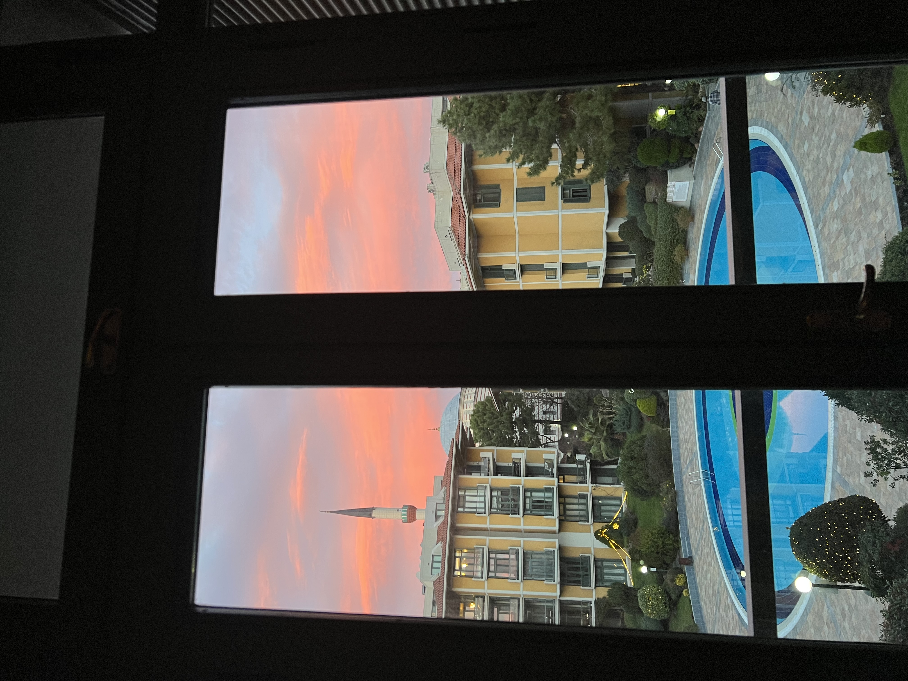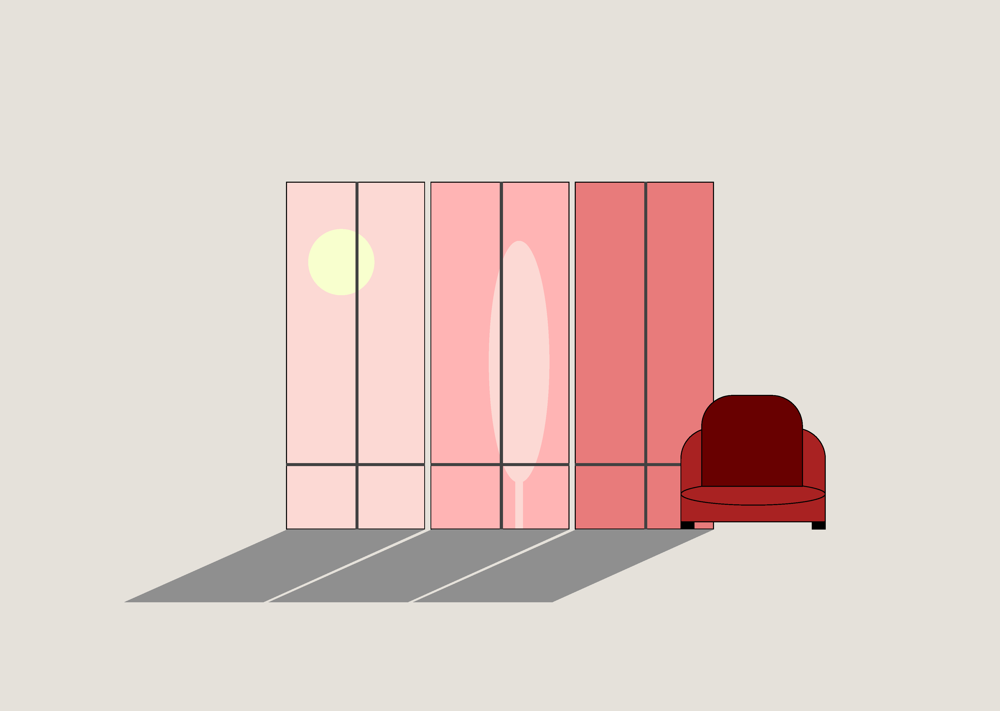Hover over effect would point out to time passing and the shadows from the windows would work with layering to create the 3D effect. Another thing to consider here is to create a wholesome color palette. All chosen colors should add upto the feeling of calmness and content.
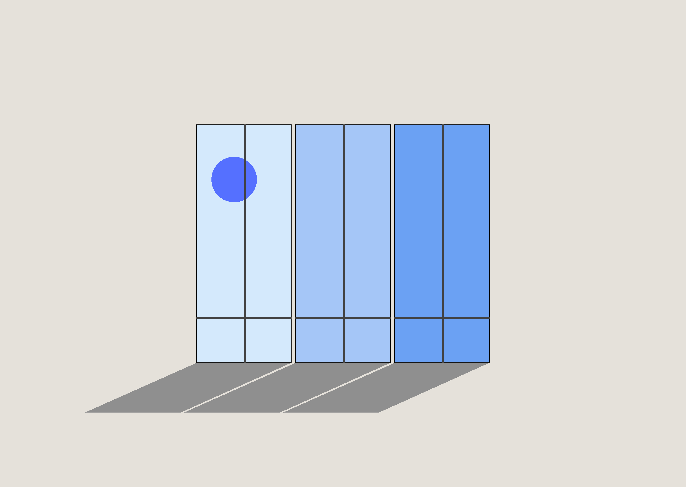The first scene I created, I linked to the middle window. I wanted to choose an item that is very much Turkish and a native to my own household. As I looked at the photos pf my actual living room, I decided that one of the major elements in the space is the "Turkish Kilim"s. I decided to use CSS Grid and hover effect to paint a mosaic pixel art kilim. I used DALL-E to generate pixel art kilims and used them as a reference photo to create the kilim motif. The color palette I created here refers to my own kilims back home, and the earthy tones I am choosing to craft the design language.
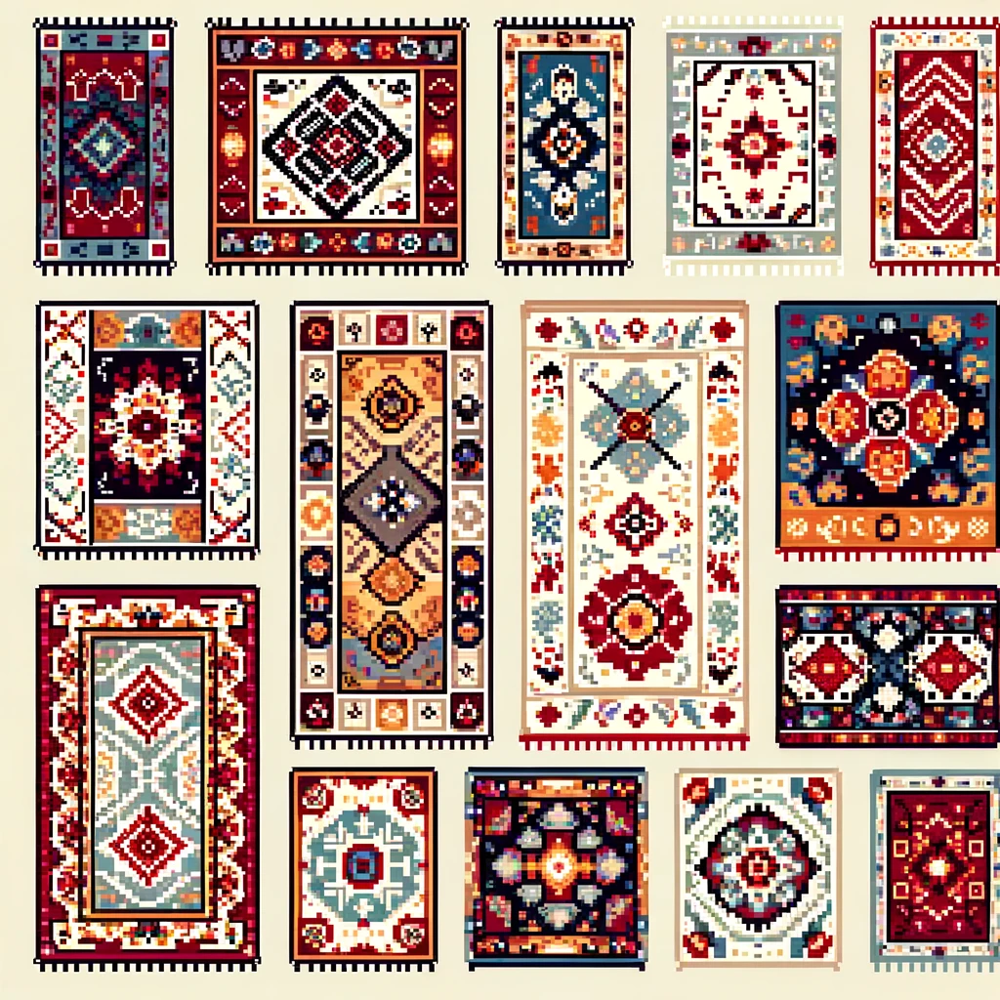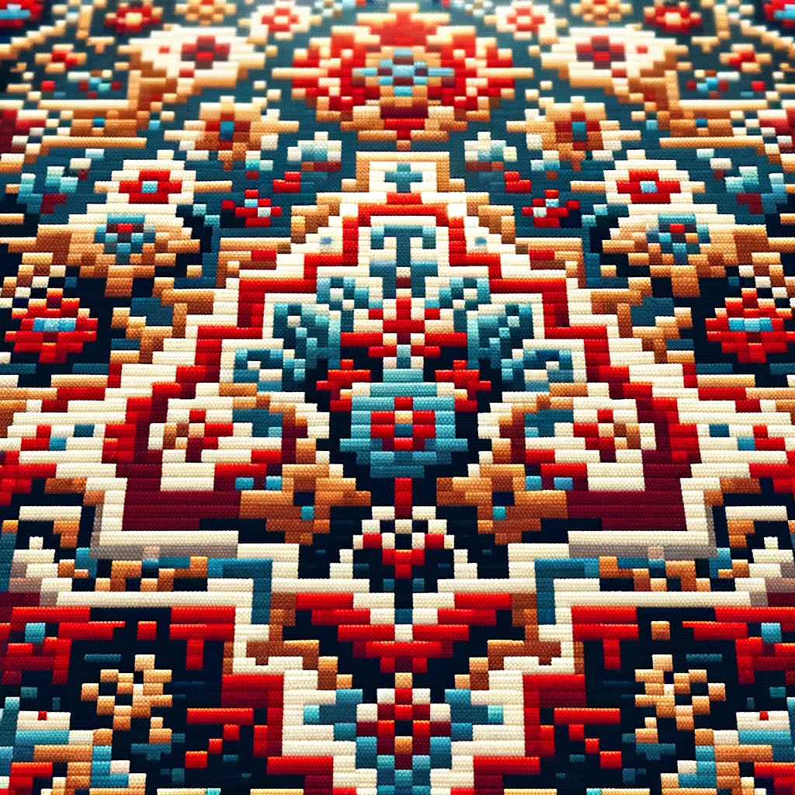 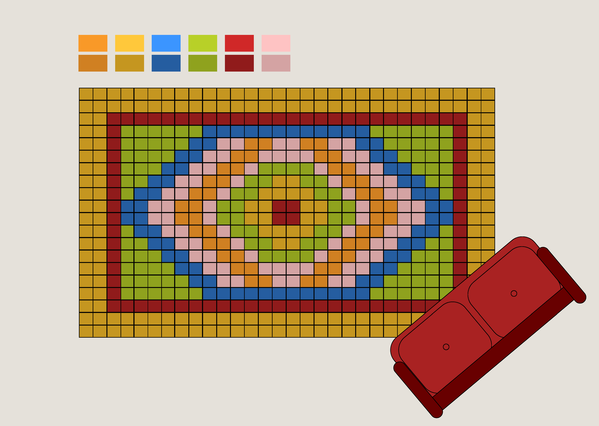Next activity would be a great family pastime, the backgammon game. As it became more and more popular among the world, I cannot hide my shock. This specific backgammon set design is by Bottega Veneta. I figured out some high hue colors would amplify the effect. The two sofa chairs refer to a two-person activity. Their rotations are made on purpose to design the composition in a playful manner. The backgammon game functions with basic CSS animations. As the mouse hovers, the game pion translates in X and Y direction.
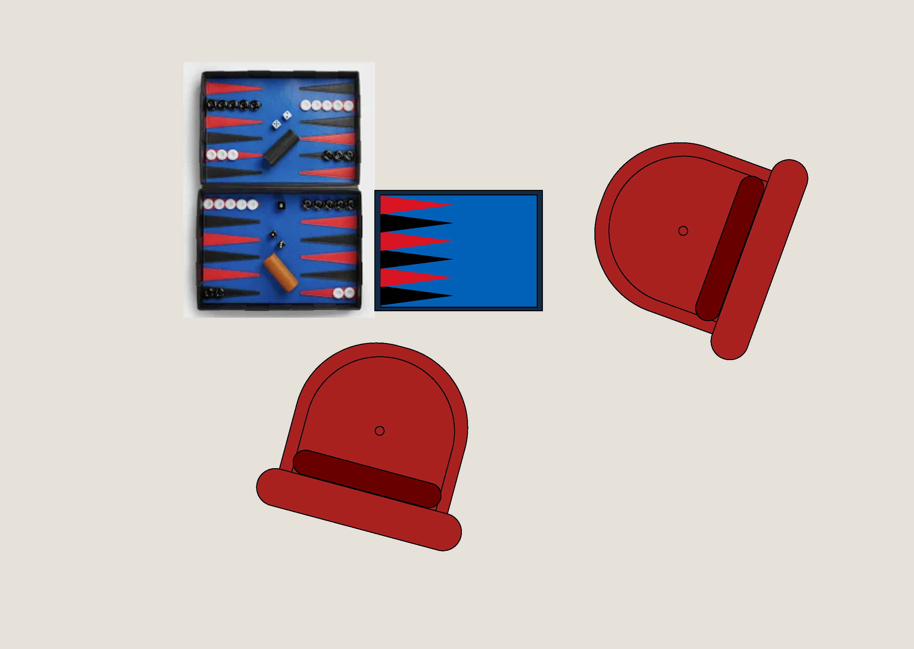The final and goodbye moment will be a view from my garden. Further developing the 3D feel, I focused on creating a road filled with trees right and left. The actual view from my home is one that I remember frequently when I'm elsewhere. That is why I decided to add it into this small storybook. The door is chosen to resemble the web space to a physical environment. Also, perspective is used to further develop the idea of a 3D space.
 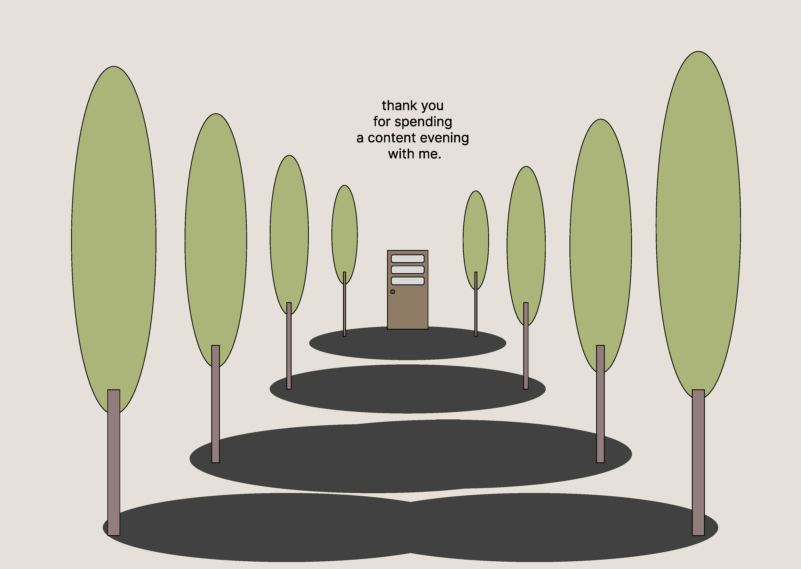
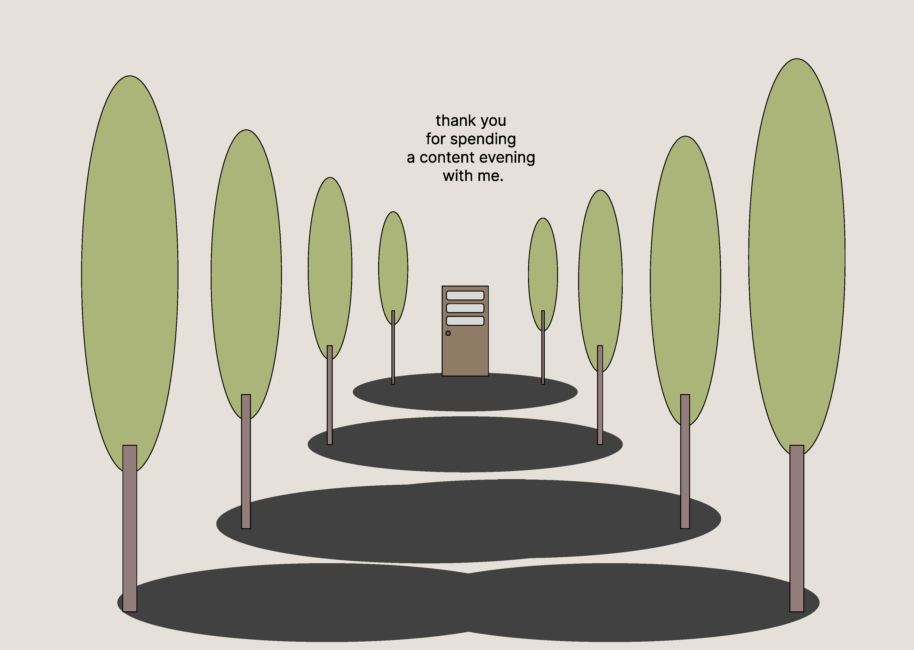

press to go back to the index!